The stories we love keep telling us the same thing because it is true, and Scripture tells it first and best.
Genesis 1 · John 1:1–5
"A long time ago, in a galaxy far, far away…"
"Once upon a time…"
"In a hole in the ground there lived a hobbit."
Something in you just leaned forward. Why?
A warm, lit, ordered place: the village, the farm, the fireside. And all around it, a dark unknown: the wood, the wild, the deep.
Nobody has to explain this map to us. We recognize it on sight.
The Pattern
Reality has a shape,
and every true story traces it.
This is the sentence of the week. Take it home with you.
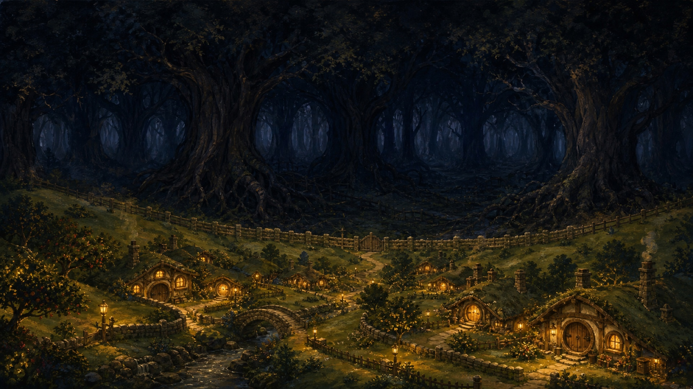
Order is where things have names and places. Chaos is where they do not. Yet.
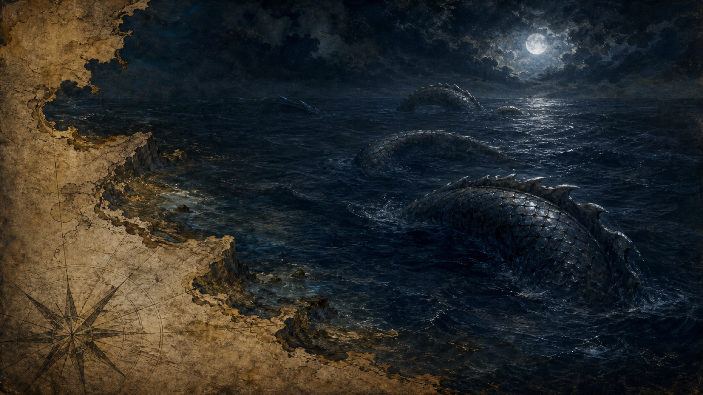
Old mapmakers wrote it at the edge of the known world. Every culture drew the same border: beyond the ordered land, something coils and waits.
Scripture knows this creature too, and is not afraid to name it: the deep, the serpent, Leviathan.
"In the beginning God created the heavens and the earth. Now the earth was formless and empty, darkness was over the surface of the deep, and the Spirit of God was hovering over the waters."
Genesis 1:1–2 · NIV
Watch what God does with the formless dark: he separates, he names, he fills. Day from night. Sea from sky. Formless, then formed. This is the first act of the whole Bible: order called out of chaos by a voice.
The Hebrew
"Formless and empty" is two rhyming words in Hebrew, tohu va-bohu: wild and waste, a trackless nowhere. Robert Alter translates the pair "welter and waste."
Genesis names the problem in two words, then spends six days answering it in two movements. Centuries later Jeremiah looks at a ruined land and reaches for the same two words (Jeremiah 4:23). Un-creation is creation running backward.
"In the beginning was the Word, and the Word was with God, and the Word was God. He was with God in the beginning. Through him all things were made; without him nothing was made that has been made. In him was life, and that life was the light of all mankind. The light shines in the darkness, and the darkness has not overcome it."
John 1:1–5 · NIV
Go Deeper
John wrote in Greek, and the word he chose was Logos: word, reason, the ordering principle that makes the cosmos hang together. The Greeks had been searching for it for centuries.
John's staggering claim: the order of the world is not a force. It is a Person. And the Person took on flesh and moved into the neighborhood.
Two ideas will follow us for eleven weeks. Reality is patterned, and the pattern is meaningful. And every human life is lived on the border between order and chaos, with stories as our maps. John goes further than either: the Mapmaker has stepped onto the map.
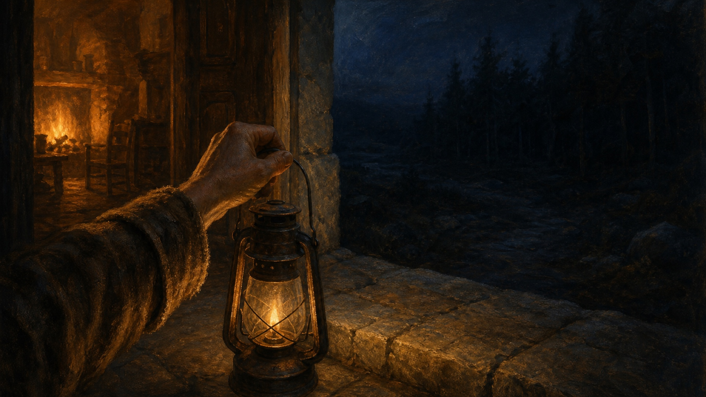
"The light shines in the darkness,
and the darkness has not overcome it."
Where chaos touches your life this week, the Word is still ordering the deep.
Christ is not one hero among many. He is the Logos every hero echoes.
Talk It Through
Take It Home
The world has a shape,
and the Shape has a name.
Next week: Why Stories Ring True
Ecclesiastes 3:11 · Acts 17:22–31
A chosen one leaves home.
A wise guide falls, so the young hero can rise.
A death that turns out not to be the end.
Which story am I describing? Exactly.
Flood stories from Babylon to China. Dragon slayers in every land. Sacrifice, descent, and return told around fires long before Bethlehem.
Peoples who never met, who could not have compared notes, telling the same shapes.
That is the question for this hour. Not who wrote first, but why the same shapes keep surfacing at all.
The Pattern
Stories endure when they tell the truth
about how the world really is.
Most stories fade. The ones that capture the most real parts of reality persist. Endurance is evidence.
C.S. Lewis loved the old myths but called them lies, though lies "breathed through silver." His friend disagreed.
J.R.R. Tolkien argued that we are sub-creators, made in the image of a Maker, and that even our imperfect myths refract a fragment of the true light.
Twelve days later, Lewis wrote to a friend that he had passed from believing in God to believing in Christ. The walk had everything to do with it.
The dying and the rising that the old stories kept reaching for stopped being a story. It happened, in daylight, in a real garden outside a real city.
Lewis's famous line "myth became fact" does not mean Christ is a myth. It means the thing every myth was groping toward walked out of a tomb.
"…with this tremendous difference that it really happened." C.S. Lewis, letter to Arthur Greeves, October 1931. Tolkien called the gospel the true fairy-story, the joyous turn of history that does not deny sorrow but overturns it.
"He has made everything beautiful in its time. He has also set eternity in the human heart; yet no one can fathom what God has done from beginning to end."
Ecclesiastes 3:11 · NIV
That ache the best stories leave behind? Solomon named it three thousand years ago: eternity, set in the human heart.
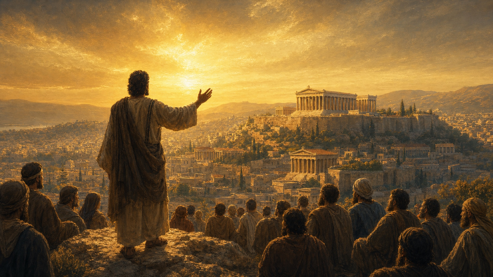
"God did this so that they would seek him and perhaps reach out for him and find him, though he is not far from any one of us. 'For in him we live and move and have our being.' As some of your own poets have said, 'We are his offspring.'"
Acts 17:27–28 · NIV
Paul stands in Athens, a marketplace of myths, and instead of burning it down, he quotes their own poets and points the longing home.
Our Other Two Guides
Jonathan Pageau (say it pa-ZHOH) is an Orthodox Christian who carves icons for a living. He studies symbolism: how reality is patterned, and how the same pattern repeats at every scale, from a household to a kingdom to the cosmos. The pattern is in the world.
Jordan Peterson is a clinical psychologist. He spent a career on one question: why can human beings not stop telling these stories? His answer maps the border between order and chaos where every ordinary life is lived. The pattern is in us.
We use both men as guides, not authorities. Pageau helps us see the patterns in reality. Peterson helps us see why human beings navigate by them. Scripture remains our measure for both.
Go Deeper
Peterson: the stories that survive are distilled maps for human life. They last because they help us get through it. That is true, and it is no small thing.
Pageau: the maps work because the patterns are not only in our heads. Reality itself is structured, and structured meaningfully.
Lewis and Tolkien: our imagining echoes the Creator because we are creatures, made in his image. "We make still by the law in which we're made."
John: all things were made through the Logos. We do not invent these patterns out of nothing. We keep discovering them.
Put It Together
Of course it is in both.
Both came through the same Logos.
The world outside us and the image-bearing creature standing in it are not two unrelated systems. The same Word made the sea and the mind that stands at the shore.
"Through him all things were made; without him nothing was made that has been made." John 1:3. So the recurring patterns are not a coincidence needing to be explained away. They are exactly what you would expect.
A story taking part in a pattern does not make it fiction. David really faced Goliath, and the small faithful center really did stand against monstrous chaos. Jonah really went down into the deep, and the descent really is the shape of death and return.
Christ was crucified under a governor whose name we know, buried, and raised. That event is also the center where every pattern of sacrifice, descent, and victory in Scripture converges.
Christianity does not claim only that the pattern is meaningful. It claims that in Jesus Christ, the pattern entered history.
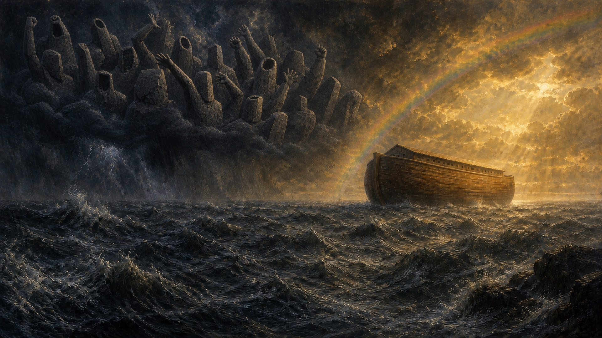
Yes, the Gilgamesh tablets are older than Moses, and it costs us nothing. An echo does not create the sound. Nearly every people on earth remembers the waters: peoples who never met, all recalling a judgment survived by a remnant.
Now hear what they remember. In Gilgamesh the gods drown mankind for making too much noise, then squabble over the survivor. In Genesis a righteous God judges real evil, and then binds himself by covenant never again.
The other tellings are witnesses that something happened. Scripture is testimony to who was in it, given by the One who was there. Everywhere else the pattern is a rumor. Here it has an address.
That ache is homesickness.
The best stories make us long for something no story can deliver. The gospel is where the longing points, and it is not one more beautiful rumor: it happened, in history, outside a real city, under a Roman governor.
Myth became fact, and did not stop being beautiful.
Talk It Through
Take It Home
The stories ring true
because Someone struck the bell.
Next week: The Call of the Hero
Genesis 12:1–4 · Exodus 3 · 1 Samuel 16
A farm boy stares past two setting suns.
A hobbit runs out his gate without a handkerchief.
A letter arrives, addressed to the cupboard under the stairs.
Every adventure begins the same way: with a summons.
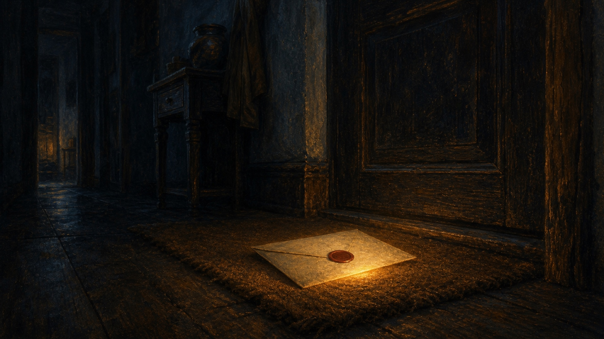
It never comes when you are ready. It comes while you are herding sheep, farming moisture, washing someone else's dishes.
The summons is always bigger than you, and never fully explained up front.
The Pattern
The hero is not the one who is ready.
The hero is the one who goes.
This is the sentence of the week.
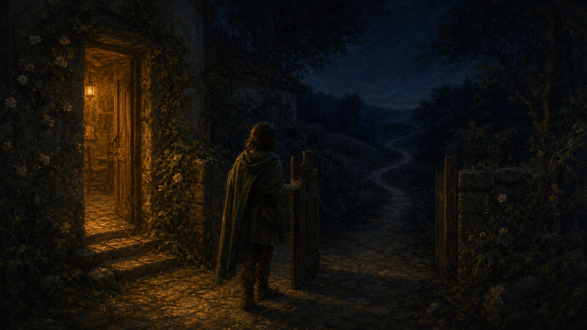
Luke: "I've got work to do." Frodo: "I am not made for perilous quests." Moses: "Who am I?"
The call exposes the gap between who we are and what is asked. Reluctance is not a disqualification; it is the standard response.
Notice what never happens: the call is never withdrawn because the hero feels unqualified.
Every call is a call away: from the Shire, from the farm, from the cupboard, from Ur of the Chaldeans. The known world is the price of the promised one.
That is why we make excuses. It is not laziness; it is grief for the world we are being asked to leave.
"The LORD had said to Abram, 'Go from your country, your people and your father's household to the land I will show you. I will make you into a great nation, and I will bless you; I will make your name great, and you will be a blessing.' … So Abram went, as the LORD had told him."
Genesis 12:1–2, 4 · NIV
No map. No destination. Only a command and a promise. "So Abram went" may be the bravest sentence in the Bible.
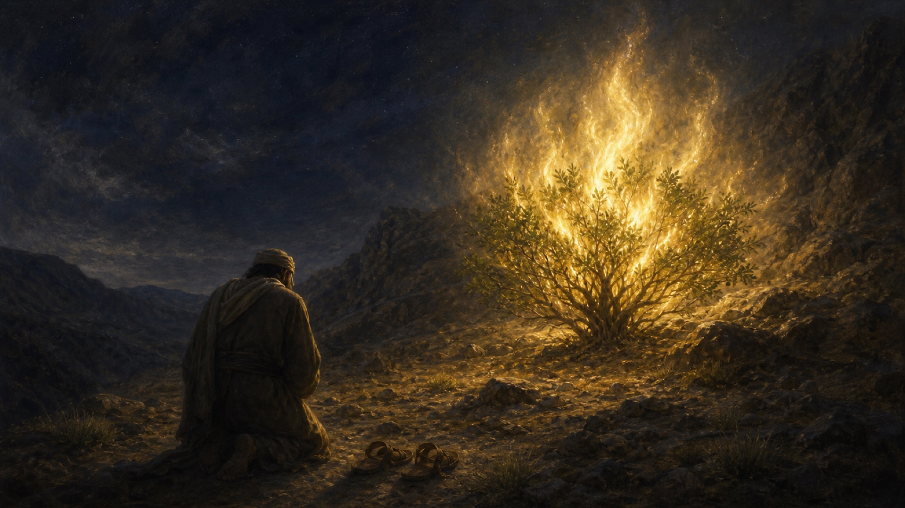
"So now, go. I am sending you to Pharaoh to bring my people the Israelites out of Egypt." But Moses said to God, "Who am I that I should go to Pharaoh and bring the Israelites out of Egypt?" And God said, "I will be with you."
Exodus 3:10–12 · NIV
God does not answer "Who am I?" with a resume. He answers with himself.
Go Deeper
Peterson observes that a life becomes meaningful when you voluntarily shoulder what the unknown asks of you. He is right, and every hero story in the room agrees with him. But notice how the call arrives in those stories: by owl, by wizard, by accident.
In Scripture the call is personal: Abram, Moses, Samuel, each summoned by name. And David, overlooked by his own father, was seen by God among the sheep.
"People look at the outward appearance, but the LORD looks at the heart." 1 Samuel 16:7, NIV
You are not an extra
in someone else's story.
The Caller still calls: to repentance, to a neighbor, to a task with your name on it. And every call carries the promise Moses received: I will be with you.
Talk It Through
Take It Home
The call always comes with a promise:
I will be with you.
Next week: The Mentor
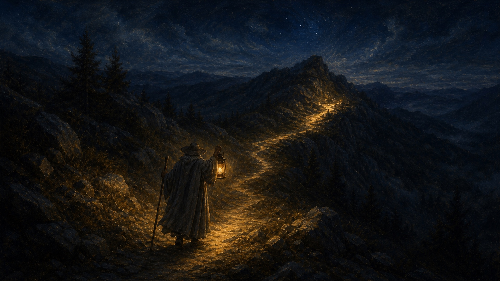
1 Samuel 3 · 2 Timothy 1
An old hermit in the desert, keeping a strange sword.
A grey wanderer knocking at a round green door.
A torchlit cave: "It's dangerous to go alone! Take this."
Every hero gets a guide. Almost none of them gets to keep him.
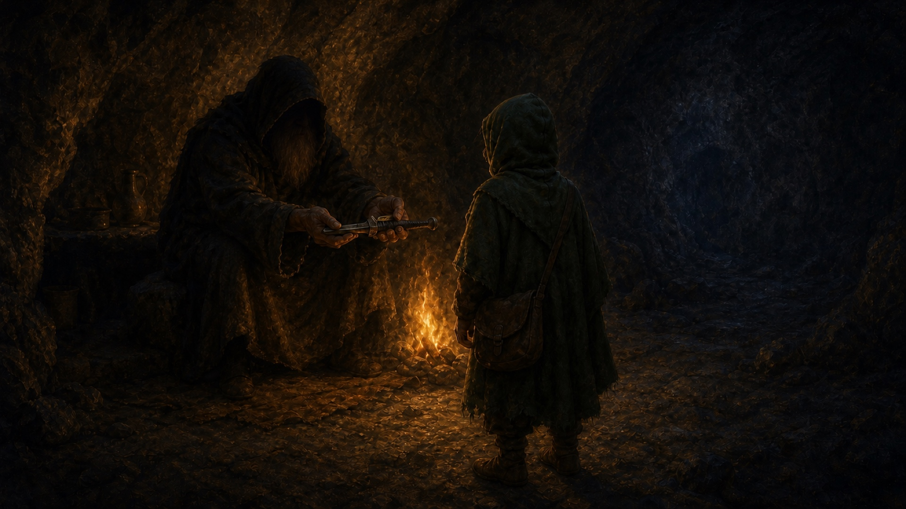
"It's dangerous to go alone! Take this." A whole archetype in one line: the elder who has walked the road, the gift that fits the road ahead, and the release.
Millions of kids received a sword from that old man. Nobody had to explain the scene to any of them.
The Pattern
Wisdom equips you for a road
it cannot walk for you.
This is the sentence of the week.
Notice what is never on the list: a guarantee.
Obi-Wan is struck down. Gandalf falls in Moria. Dumbledore falls from the tower. Jiminy gets ignored at the worst moments.
This is not sloppy plotting. If the guide stays, the hero never becomes one.
And hidden inside the pattern, a whisper of something greater: "It is for your good that I am going away." John 16:7
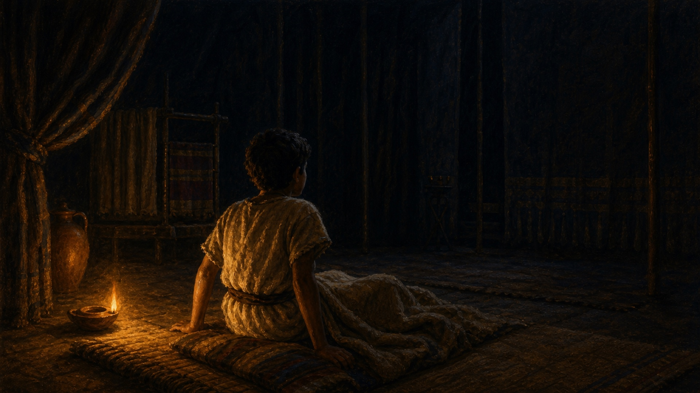
"So Eli told Samuel, 'Go and lie down, and if he calls you, say, "Speak, LORD, for your servant is listening."' So Samuel went and lay down in his place. The LORD came and stood there, calling as at the other times, 'Samuel! Samuel!' Then Samuel said, 'Speak, for your servant is listening.'"
1 Samuel 3:9–10 · NIV
Eli is old, failing, and compromised. He still does the one thing a mentor must do: he teaches the boy to recognize the Voice, and then he steps out of the way.
"I am reminded of your sincere faith, which first lived in your grandmother Lois and in your mother Eunice and, I am persuaded, now lives in you also. For this reason I remind you to fan into flame the gift of God, which is in you through the laying on of my hands. For the Spirit God gave us does not make us timid, but gives us power, love and self-discipline."
2 Timothy 1:5–7 · NIV
An old man writes from a Roman prison to his spiritual son. Faith travels through named, ordinary people. Grandmothers are mentors too.
Go Deeper
Peterson reads the wise old man as the accumulated wisdom of the past, handing you its tools. Pageau sees the mentor as the one who stands nearer heaven and translates it down the mountain. Both are true, and both are temporary.
Every earthly mentor is flawed and every one departs: Eli's house is failing, Paul writes on death row. Each hands the hero to a greater guide.
Jesus turned the pattern inside out: "It is for your good that I am going away," because the Helper comes. The Spirit is the Mentor who never leaves.
Whose voice are you
learning to recognize?
Every believer is Samuel, learning to hear. And every believer is called to be an Eli for someone younger in the faith.
Who taught you to listen? Who is learning to listen from you?
Talk It Through
Take It Home
Every good mentor hands you
to the Mentor who stays.
Next week: The Monster Outside
1 Samuel 17 · Job 41
A dragon sleeps on stolen gold under a mountain.
A giant shouts his challenge across a valley, forty mornings running.
A shadow in black armor fills the doorway.
Every people, every age, every story: the monster waits outside the walls.
Tiamat in Babylon. The world-serpent in the north. St. George's dragon. The taniwha, the leviathan, the wyrm at the edge of every old map.
And the stories agree on the strangest detail: the monster is always guarding a treasure.
The Pattern
The dragon is real,
and it must be faced, not fed.
This is the sentence of the week.
Chesterton said children already know the dragon exists. What the fairy tale gives them is a St. George who can kill it.
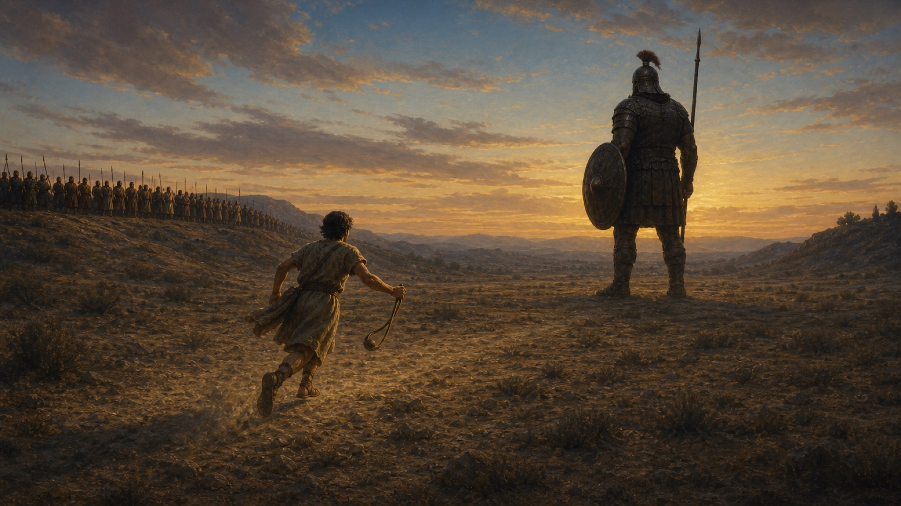
Israel's army heard the taunt for forty days and fed the fear. David heard it once and asked who this uncircumcised Philistine thought he was.
He refused the borrowed armor. He faced his giant with weapons tested in small, unseen battles: the lion, the bear, the sling.
Then the strangest verb in the chapter: David ran toward the battle line.
"David said to the Philistine, 'You come against me with sword and spear and javelin, but I come against you in the name of the LORD Almighty, the God of the armies of Israel, whom you have defied. … All those gathered here will know that it is not by sword or spear that the LORD saves; for the battle is the LORD's.'"
1 Samuel 17:45, 47 · NIV
Courage is not the absence of fear. It is knowing whose battle this is.
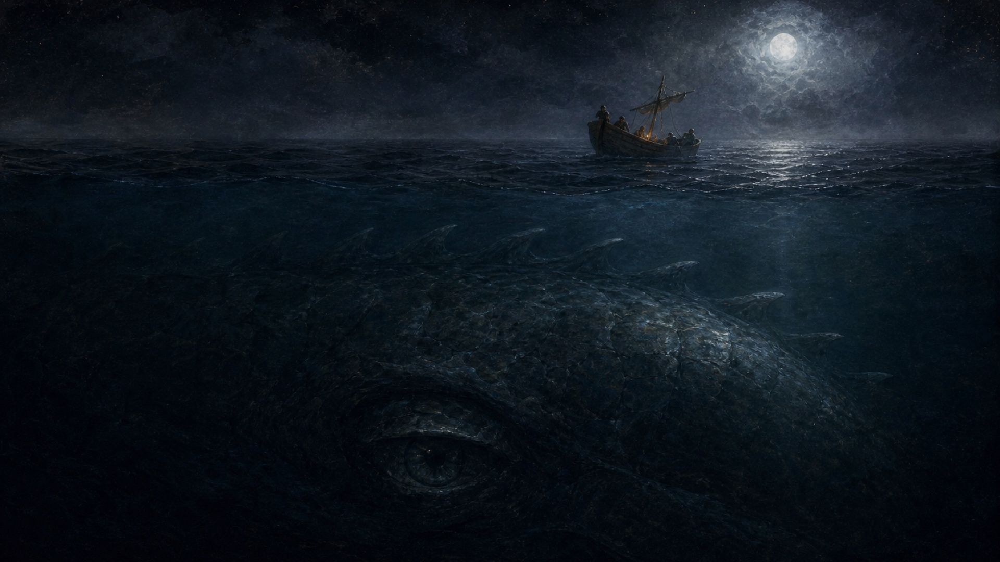
"Can you pull in Leviathan with a fishhook or tie down its tongue with a rope? … No one is fierce enough to rouse it. Who then is able to stand against me?"
Job 41:1, 10 · NIV
God's answer to Job includes a monster no human can tame. Some dragons are beyond us; none are beyond him. Chaos is real, and it is on a leash.
Go Deeper
Peterson puts the old insight plainly: the monster you avoid grows, and the treasure lies where you least want to look. Voluntary confrontation is the price of the gold.
Pageau supplies the map. Monsters belong at the edges, in the sea, the desert, past the last lamp, because the edge is where order thins out. That is why Leviathan is a sea creature, and why a city wall has always meant more than bricks.
Scripture agrees with both, then goes further: the serpent is not merely a metaphor for our fears. Evil is real, and personal, and sentenced. "He will crush your head, and you will strike his heel." Genesis 3:15. The gospel is the dragon-slaying story that happened.
Name your Goliath.
What taunts you every morning and every evening? The pattern holds: fed, it grows. Faced in the name of the LORD, it falls.
Start with lions and bears. Small, faithful battles are where slings get trained.
Talk It Through
Take It Home
Face the dragon.
The battle is the LORD's.
Next week: The Monster Within
Genesis 4:7 · Romans 7
A creature that was once something like a hobbit, whispering to itself.
A wooden boy whose nose betrays him with every lie.
A wolf wearing Grandma's nightgown.
The most frightening monsters are the ones wearing our own face.
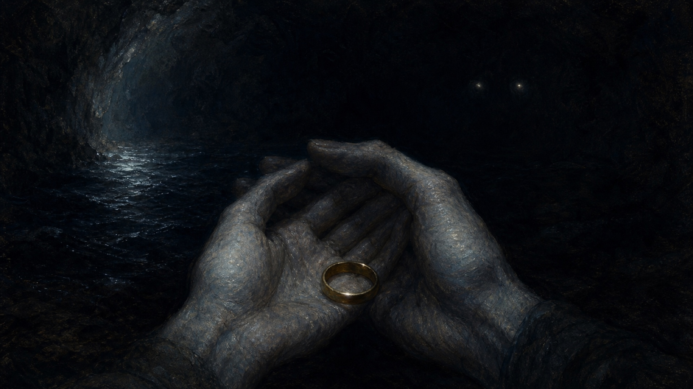
Smeagol held the ring for five hundred years, one justified compromise at a time, until the possession possessed him and the name wore away.
Tolkien's horror is precise: the monster within does not break down the door. It moves in gradually, and it always calls itself precious.
The Pattern
The line dividing good and evil cuts
through the heart of every human being.
Aleksandr Solzhenitsyn, The Gulag Archipelago. This week's sentence, borrowed from a man who learned it in a prison camp.
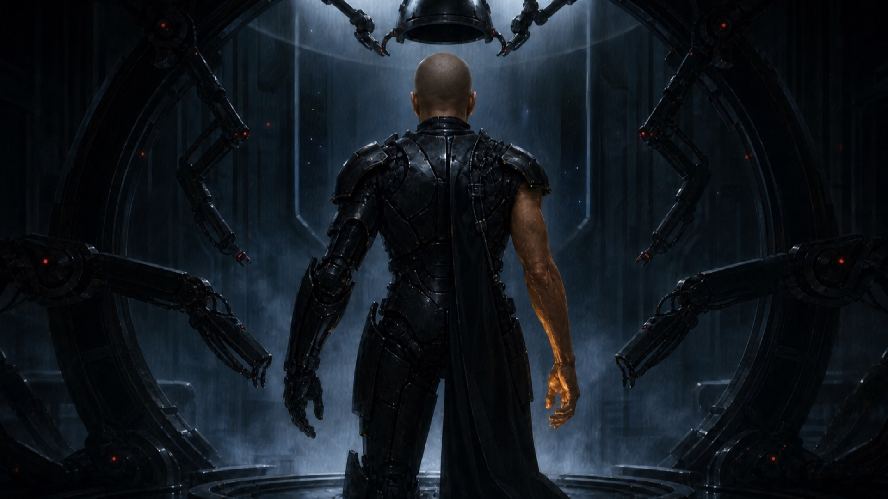
Last week's monster outside began as this week's monster within: a frightened heart, protecting itself, one justified step at a time.
The mask is what a face becomes when fear runs it long enough.
Every Gollum was a Smeagol. Every dark lord was once a gifted child. The stories keep warning us: this is a road, not a lightning strike.
Pinocchio's nose: the lie writes itself on the liar. Sin always disfigures the sinner first.
The wolf in Grandma's clothing: temptation rarely looks like a wolf. It looks like comfort, familiarity, something that belongs in the house.
The old stories keep insisting: the danger is not only in the dark wood. It follows you home and learns your voice.
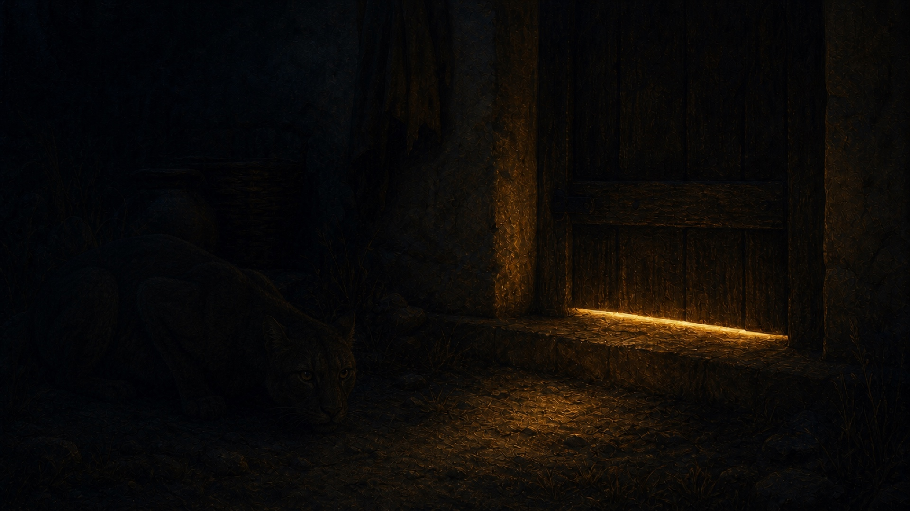
"If you do what is right, will you not be accepted? But if you do not do what is right, sin is crouching at your door; it desires to have you, but you must rule over it."
Genesis 4:7 · NIV
God to Cain, moments before the first murder. The Bible's first monster is not a dragon at the world's edge. It is a predator crouched at the door of a human heart.
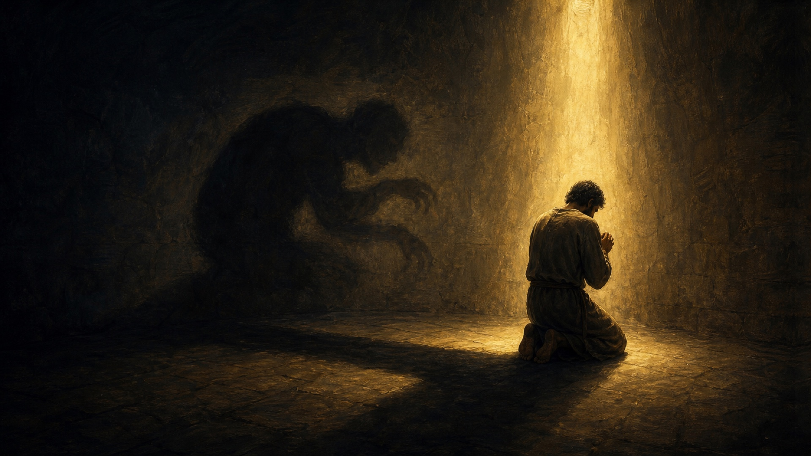
"I do not understand what I do. For what I want to do I do not do, but what I hate I do. … What a wretched man I am! Who will rescue me from this body that is subject to death? Thanks be to God, who delivers me through Jesus Christ our Lord!"
Romans 7:15, 24–25 · NIV
That is the apostle Paul, not a beginner. The divided heart is not a phase the mature grow out of. It is the battlefield where grace operates.
Go Deeper
Peterson is right about the first step: the monster you refuse to see runs your life from the shadows. Honest self-knowledge is not optional.
But Scripture's cure is not managing the monster or making peace with it. It is confession, and a death: the old self crucified with Christ, a new self raised.
You do not tame this monster. You bring it to the One who died for it, and who does not condemn the one who comes. Romans 8:1.
Even Frodo failed
at the crack of doom.
At the very end, the ring won; the quest was completed by grace anyway. Tolkien did that on purpose.
Sin is crouching at your door. Grace is standing at the same door, knocking. Only one of them loves you.
Talk It Through
Take It Home
The monster within is real.
So is the Rescuer.
Next week: Into the Belly of the Beast
Jonah 1–2 · Matthew 12:39–40
A wooden boy rows into the mouth of a monstrous whale.
A grey wizard falls with the shadow, down into the deep places.
A prophet is thrown overboard into the storm.
Some roads lead down before they lead anywhere else.
You are swallowed, or you fall, or you are thrown. The descent is the one chapter no hero would ever choose.
And yet the old stories agree on the strange part: the way down keeps turning out to be the way through.
The Pattern
The way down
is the way through.
This is the sentence of the week.
Pinocchio enters the whale to rescue his father. Inside the belly, the puppet who lied and ran and chased pleasure finally becomes brave, truthful, and selfless.
Look at the picture: the ribs arch like a cathedral. The belly is where the wooden parts of us start becoming real.
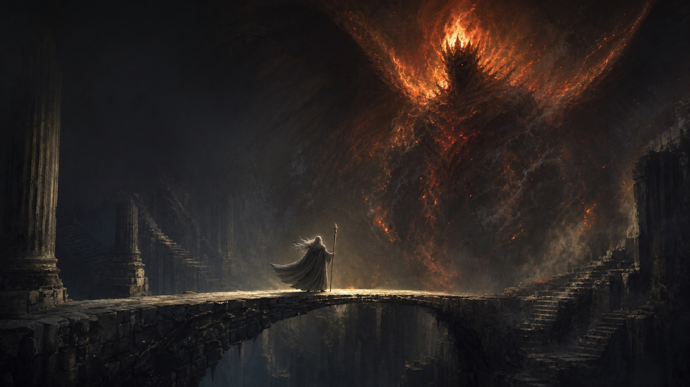
Gandalf falls fighting the shadow, through fire and water, to the deep places of the world, and is given back changed: greater, brighter, no longer grey.
Death and return is the hinge of the whole story, and Tolkien knew exactly whose story he was echoing.
"From inside the fish Jonah prayed to the LORD his God. He said: 'In my distress I called to the LORD, and he answered me. From deep in the realm of the dead I called for help, and you listened to my cry. … To the roots of the mountains I sank down; the earth beneath barred me in forever. But you, LORD my God, brought my life up from the pit.'"
Jonah 2:1–2, 6 · NIV
Notice where Jonah finally prays: not on the boat, not on the beach. Rock bottom has strange acoustics. Prayers travel well from there.
"He answered, 'A wicked and adulterous generation asks for a sign! But none will be given it except the sign of the prophet Jonah. For as Jonah was three days and three nights in the belly of a huge fish, so the Son of Man will be three days and three nights in the heart of the earth.'"
Matthew 12:39–40 · NIV
Jesus reads Jonah the way this class reads stories: as pattern. Then he aims the pattern at himself. The descent has a name and a date.
Go Deeper
Peterson: every rebirth in myth passes through a descent, and the treasure waits at the bottom of the abyss. Pageau: creation itself runs the pattern, seeds buried before they bear, winter before spring, night before morning. Neither of them needs correcting here. The world was built to teach this.
Paul says the pattern was enacted on you: "We were therefore buried with him through baptism into death in order that, just as Christ was raised from the dead through the glory of the Father, we too may live a new life." Romans 6:4
Every baptism is a belly-of-the-beast story with a happy ending.
Are you in the belly right now?
Then hear the pattern's promise: this is not the end of your story. The belly is where prayer starts working, and where the wooden parts of us begin to become real.
And you do not come up merely rescued. You come up changed.
Talk It Through
Take It Home
The way down is the way through,
because Someone went down first.
Next week: The Life Laid Down
Isaiah 53 · John 10:11–18 · John 15:13
An old knight raises his blade, then lowers it, and lets the blow fall.
A great lion walks alone up the hill to a table of stone.
A boy walks into the forest to die, turning a small stone over in his pocket.
The oldest twist in storytelling: the hero wins by dying.
Not the duels. Not the battles. The walks: a lion's slow walk up the hill, a boy's steady walk into the trees, when running away is still possible and nobody would blame them.
Where did storytellers learn that shape? There was once a walk up a hill outside Jerusalem.
The Pattern
"No one takes it from me,
but I lay it down of my own accord."
John 10:18. This week the sentence is Scripture itself, and it is the keystone of the whole course.
Lewis wrote Narnia as a supposal: suppose the Son of God had a world like that one; what might he do there? So a great lion offers himself in a traitor's place, is bound, shorn, and killed on the table of the old law.
And then morning comes, and a deeper magic from before the dawn of time, and the table cracks from end to end.
Every child who ever wept at that chapter was being catechized, and Lewis knew it.
Obi-Wan lowers his blade so the boy can escape, and becomes more than he was. Harry walks to his death, and his willing sacrifice shields everyone he left behind.
And Vader: the monster of sessions five and six is not defeated by a better swordsman. He is brought back to life by a son who would rather die than stop loving him.
The pattern insists: laying your life down is not losing. It is the one move the darkness has no answer for.
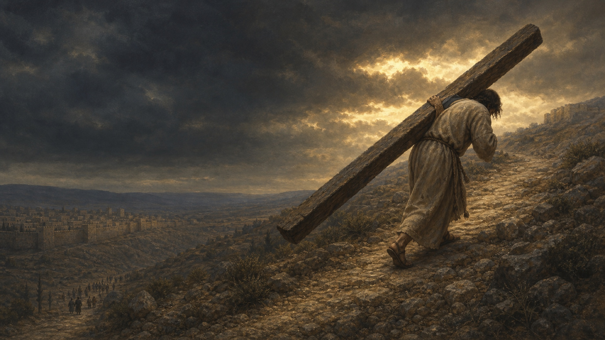
"Surely he took up our pain and bore our suffering, yet we considered him punished by God, stricken by him, and afflicted. But he was pierced for our transgressions, he was crushed for our iniquities; the punishment that brought us peace was on him, and by his wounds we are healed. We all, like sheep, have gone astray, each of us has turned to our own way; and the LORD has laid on him the iniquity of us all."
Isaiah 53:4–6 · NIV
Written seven centuries before the cross. The suffering servant is the blueprint every sacrificial hero has been tracing ever since.
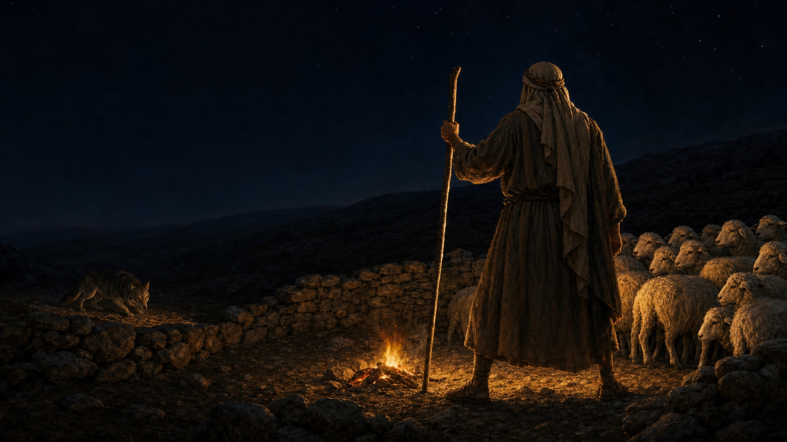
"I am the good shepherd. The good shepherd lays down his life for the sheep. … No one takes it from me, but I lay it down of my own accord. I have authority to lay it down and authority to take it up again."
John 10:11, 18 · NIV
Not a victim. A volunteer. The cross was not something that happened to Jesus. It was something he did.
Go Deeper
Peterson calls sacrifice humanity's deepest discovery: the future can be bargained with; give up what you love now for what is greater later. The highest form, he says, is the self offered for others. He is describing, in psychological language, the shape of the cross.
But the gospel refuses to stay a shape. Pierced hands. A borrowed tomb. A dated Roman execution under a named governor. And on the third day, the sign of Jonah completed.
Every other sacrifice story is the pattern dreamed. This one is the pattern entering history and leaving evidence. The archetype happened. That is the scandal, and the glory.
"Greater love has no one than this:
to lay down one's life for one's friends."
John 15:13. And the laid-down life is not only his gift to you; it is his shape for you: the daily small deaths of forgiving, serving, going last, giving up the final word.
Take up your cross daily, he said. The pattern is now yours to trace.
Talk It Through
Take It Home
No one took his life.
He laid it down, for you.
Next week: The Least Likely One
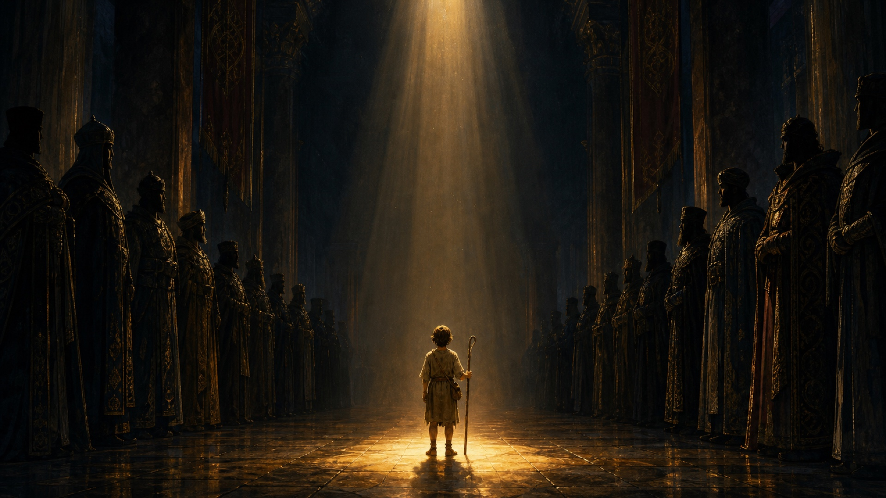
1 Samuel 16:7 · 1 Corinthians 1:26–29
The youngest of three brothers, sent last, armed only with kindness.
A cinder-girl the invitation forgot.
A gardener who carries his master up the mountain.
The old stories keep picking the one nobody picked.
In tale after tale, the two eldest brothers are strong, clever, impressive, and they fail. The youngest, the simpleton, the kind one, wins the kingdom.
Why would every culture's stories keep wasting their crowns on fools, cinder-girls, and boys in green from small villages?
The Pattern
The story always chooses
the one nobody chose.
This is the sentence of the week.
Frodo bears the ring, but Tolkien named Sam the chief hero of his book. A servant whose weapons are loyalty, plain sense, and hope.
"I can't carry it for you, but I can carry you."
The greatest deed in Middle-earth is a piggyback ride, performed by a gardener.
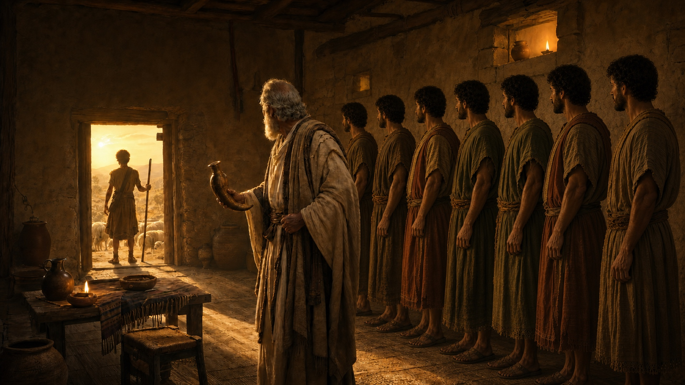
Jesse parades his impressive sons before the prophet, tallest first. The one God chose was not even invited into the house.
The pattern was old when Bethlehem was young, and it has not aged since: a boy in green from a small village still saves the kingdom, every generation.
"But the LORD said to Samuel, 'Do not consider his appearance or his height, for I have rejected him. The LORD does not look at the things people look at. People look at the outward appearance, but the LORD looks at the heart.'"
1 Samuel 16:7 · NIV
Samuel was a prophet holding the anointing oil, and he still nearly crowned the wrong son. Even prophets need the reminder.
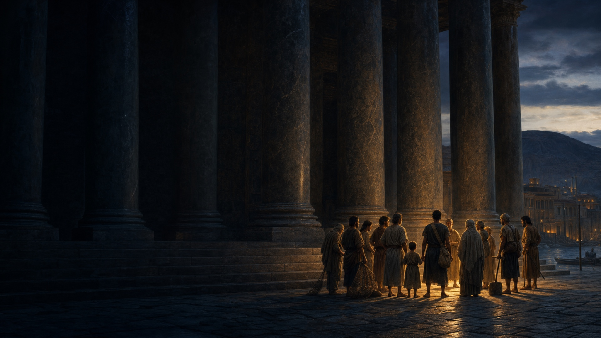
"Brothers and sisters, think of what you were when you were called. Not many of you were wise by human standards; not many were influential; not many were of noble birth. But God chose the foolish things of the world to shame the wise; God chose the weak things of the world to shame the strong."
1 Corinthians 1:26–27 · NIV
Paul continues: God chose the lowly and despised things, so that no one may boast before him. The fairy-tale rule turns out to be church membership policy.
Go Deeper
Because what is full of itself has no room for grace. The impressive brothers fail in the tales for the same reason the Pharisee fails in the parable: self-sufficiency is the one disqualification.
Pageau notices where these people are standing. The youngest son, the fool, the widow, the leper: every one of them lives at the margin, and Scripture keeps moving the margin to the center. The stone the builders rejected did not stay in the ditch.
"My grace is sufficient for you, for my power is made perfect in weakness." 2 Corinthians 12:9. God's preference for the overlooked is not sentimentality; it is where his strength shows undiluted. And the pattern's summit: the King himself came from Nazareth, born in the least of the clans of Judah, despised and rejected. The Least Likely One was the Hero all along.
You are not disqualified.
Whatever you think rules you out (your age, your past, your obscurity, your ordinariness) is precisely the material God prefers to work with.
The question is never whether you are impressive. It is whether you are willing.
Talk It Through
Take It Home
The one nobody chose
is the one God chooses.
Next week: The Return of the King
Isaiah 9:6–7 · Revelation 21
"The hands of the king are the hands of a healer."
A throne kept empty for a thousand years, while stewards keep a fading watch.
Fireworks over a forest moon as an empire falls.
Every long story leans toward the same ending: the rightful king comes home.
Sam's question, asked through tears when he wakes and finds Gandalf alive. It is the secret engine of every great ending ever written.
Tolkien coined a word for that ending: eucatastrophe, the sudden joyous turn no one dared hope for.
The Pattern
Every true story ends
with the King coming home.
This is the sentence of the week.
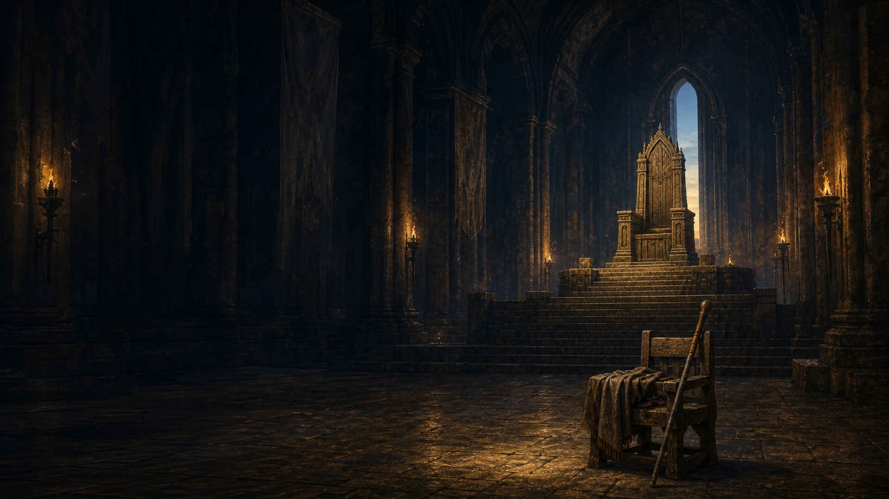
Gondor kept the throne empty for a thousand years. Stewards ruled, but never sat the seat; the watch was kept for an owner who would return.
And when the king comes, the sign of his kingship is not conquest but healing: the hands of the king are the hands of a healer.
Broken things mend when the rightful one returns. Our world too is groaning and waiting; the stewards are us.
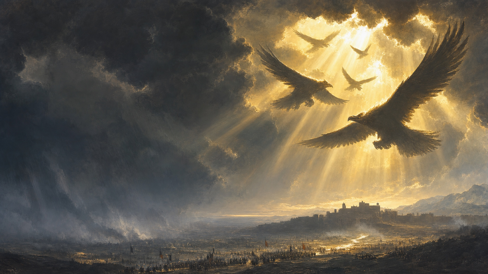
The eagles come. Dawn breaks over the fortress on the third morning. The Emperor's throne room shakes, and the Empire falls.
We keep writing this ending because we cannot help it. Hope is load-bearing in the human heart, and the heart was built that way on purpose.
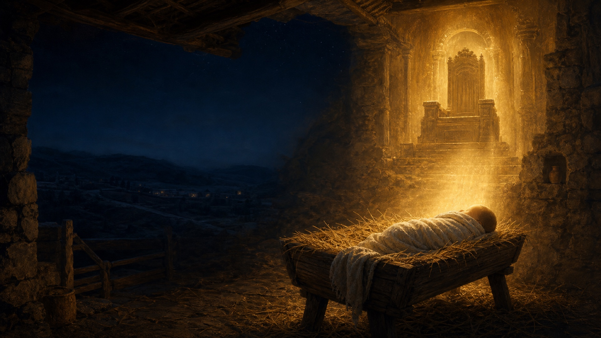
"For to us a child is born, to us a son is given, and the government will be on his shoulders. And he will be called Wonderful Counselor, Mighty God, Everlasting Father, Prince of Peace. Of the greatness of his government and peace there will be no end. He will reign on David's throne and over his kingdom, establishing and upholding it with justice and righteousness from that time on and forever."
Isaiah 9:6–7 · NIV
The King arrives as a child. The coronation begins in a manger, in the least likely town, to the least likely family. Week nine was the setup all along.
"'He will wipe every tear from their eyes. There will be no more death' or mourning or crying or pain, for the old order of things has passed away. He who was seated on the throne said, 'I am making everything new!'"
Revelation 21:4–5 · NIV
Sam's question, answered from the throne: yes. Everything sad is going to come untrue.
Go Deeper
The King has come: a manger, a cross, an empty tomb. The King reigns now, hidden the way Aragorn was hidden among the Rangers: recognized by some, unseen by most. And the King will come again, revealed.
Pageau reads kingship as the joining of heaven and earth: the true king is the one through whom what is above comes to rest on what is below. Which is why the last picture in the Bible is not our escape upward. It is a city coming down.
The old analogy still serves: the decisive battle has been won, the final victory is certain, and the fighting in between is real. Christian hope is not optimism. It is memory pointed forward.
Live like the King
is coming back.
Stewards keep the lights on. They tend the garden, guard the gate, heal what they can reach, and keep the throne's claim alive in a forgetful land.
Maranatha: the church's oldest one-word prayer. Come, Lord.
Talk It Through
Take It Home
Everything sad
is going to come untrue.
Next week: Living Inside the Story (our final session)
Hebrews 12:1–2 · Ephesians 2:10
"I wonder what sort of a tale we've fallen into?"
"There are far, far better things ahead than any we leave behind."
"For we are God's handiwork."
Ten weeks of other people's stories. One question left: what about yours?
The Map You Now Carry
The Pattern
You are in the story now.
The eleventh sentence is about you.
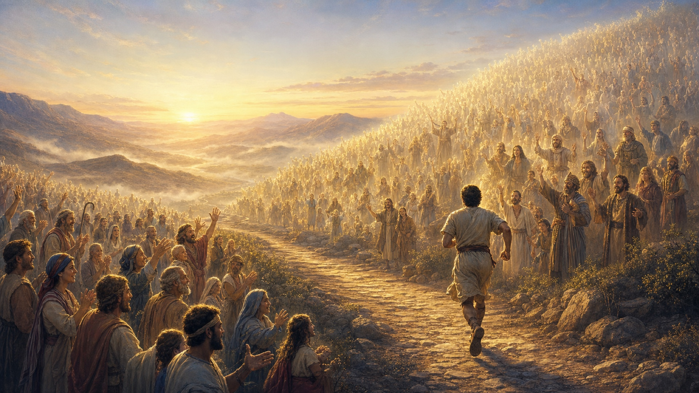
Abraham who went, Moses who argued and went anyway, David the overlooked, Samuel who learned to listen, and every Lois and Eunice since, including some who taught the people in this room.
Scripture calls them a great cloud of witnesses, and they are on their feet.
"Therefore, since we are surrounded by such a great cloud of witnesses, let us throw off everything that hinders and the sin that so easily entangles. And let us run with perseverance the race marked out for us, fixing our eyes on Jesus, the pioneer and perfecter of faith."
Hebrews 12:1–2 · NIV
A race marked out for us: your course is real, it is yours, and the one who ran first is watching from the finish.
"For we are God's handiwork, created in Christ Jesus to do good works, which God prepared in advance for us to do."
Ephesians 2:10 · NIV
Paul's word for handiwork is poiema, the root of our word poem. You are God's poem, written into his story, with works prepared in advance: a plot, waiting for you to walk it.
Go Deeper
Look back down the course and see one figure walking through every session: the Logos who shaped the world, the myth that became fact, the one who answered the call, who faced the tempter, who went down into the heart of the earth, who laid down his life, who came from Nazareth of all places, and who is coming back as King.
Every archetype we studied was his silhouette. Not because Scripture borrowed the shapes, but because he made the world that keeps producing them, and then walked into it himself, at an address, on a date.
And by union with Christ, his story becomes yours: his death your death, his life your life, his ending your ending.
Go live a good chapter.
Read Scripture as the revelation of reality. Watch stories with your eyes open. Answer your call. Face your dragons. Sit with someone in the belly. Mentor a Samuel. Watch for the King.
The class ends tonight. The story does not.
Talk It Through
Take It Home
You are in the story now,
and the Author knows your name.
Heroes, Mentors, and Monsters · "The light shines in the darkness, and the darkness has not overcome it."